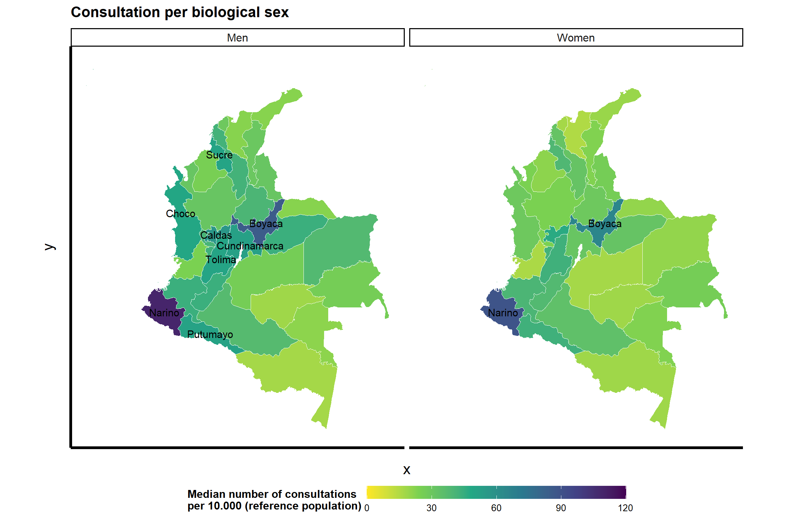
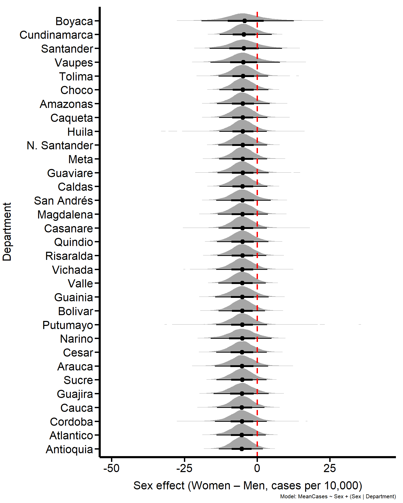

This first chunk sources the _common.R script. This single step loads all necessary packages, defines the global Plot_theme, and loads the primary Neuro_Data (prepared in Data Cleaning and Processing) and Col_map_fixed data frames into our environment.
2.2 Consultations per Year
This section examines how the number of consultations for ICD-10 neurodevelopmental disorders changed over time in Colombia between 2016 and 2022. To provide an overview of long-term patterns, we aggregate the raw consultation records by calendar year. The resulting Summary_year dataset contains the total number of consultations reported in each year of the observation period.
2.2.1 Data Preparation
First, we create a summary table by grouping the main Neuro_Data by Year and summing all Cases for each year.
We visualize the yearly trend using a line and point plot. The y-axis labels are formatted with scales::cut_short_scale() to automatically display “K” for thousands, improving readability.
Figure 2.1: Distribution of consultation cases for neurodevelopmental disorders per year
The temporal trend is visualized using a line plot with points (Figure fig-Cases_year-line). The annual totals reveal a clear upward trajectory during the pre-pandemic years: consultations increased steadily from 154,453 cases in 2016 to a peak of 332,318 cases in 2019. In 2020, the first year of the COVID-19 pandemic, we observe a sharp decline to 179,859 cases, likely reflecting the widespread disruption of outpatient services and reduced healthcare access.
Following this drop, the number of consultations rises again, reaching 240,548 cases in 2021 and 283,661 cases in 2022, though not yet returning to the 2019 peak. This temporal structure provides important context for interpreting subsequent spatial and demographic analyses, and motivates the need to examine how consultation patterns varied across departments and patient subgroups during this period.
2.3 Geographical Distribution
In this section, we explore how the intensity of neurodevelopmental consultations varies across Colombian departments. Instead of counting raw numbers of cases, we work with a standardized rate that makes regions comparable. For each municipality, we calculate the number of neurodevelopmental consultations per 10,000 individuals in the corresponding reference population (Diagnostics_per_tenthousand). The reference population matches the age structure and locality of the reported consultation.
2.3.1 Data Preparation
We aggregate municipality-level rates at the departmental level. For each department, we compute the median number of consultations per 10,000 individuals across all municipalities in that department (MedianCases). Using the median keeps the summary robust against extreme values from very small or very large localities.
For clarity, we present a table of the median number of consultations per department, conditioning on the reference population.
Code
# Sort data for the tabledepartment_table_data <- Summary_Department %>%arrange(desc(MedianCases))# Create the gt tabledepartment_table <- department_table_data %>%gt() %>%cols_label(Department ="Department",MedianCases ="Median Cases" ) %>%fmt_number(columns = MedianCases,use_seps =TRUE,decimals =0 ) %>%theme_apa_gt()# Save the table filesgtsave(department_table,filename ="Tables/Department_Summary_Table.html")gtsave(department_table,filename ="Tables/Department_Summary_Table.tex")department_table
Table 2.1: Total Cases by Department
Department
Median Cases
Narino
97
Boyaca
78
Caldas
51
Tolima
48
Sucre
47
Cundinamarca
45
Huila
43
Putumayo
43
Quindio
42
Cauca
41
Bolivar
39
Risaralda
37
Choco
36
Caqueta
35
Casanare
35
Santander
34
Antioquia
29
Norte de Santander
29
Vichada
28
Archipielago de San Andres, Providencia Y Santa Catalina
26
Cesar
26
Guainia
26
Atlantico
23
Cordoba
22
Valle del Cauca
22
Vaupes
22
Arauca
21
La Guajira
21
Meta
20
Amazonas
18
Guaviare
18
Magdalena
16
The resulting table ranks departments by their median rate of consultations. Departments such as Nariño (median 97 consultations per 10,000 individuals), Boyacá (78), Caldas (51), Tolima (48), and Sucre (47) stand out with the highest typical consultation intensities.
2.3.3 Generating a Map of Colombia
To visualize this pattern, we join the departmental summaries with the GADM shapefile and generate a choropleth map of Colombia. Each department appears with a color that reflects its median consultation rate. This map highlights clusters of high and low consultation intensity and helps identify regions where the healthcare system records more frequent neurodevelopmental assessments relative to the local population.
To join the case data with the map geometry, we use the Col_map_fixed object (loaded from _common.R) and perform a left_join with our Summary_Department data.
Code
Map_df <- Col_map_fixed %>%left_join(Summary_Department, by ="Department")
2.3.4 Consultation by Department
We plot the total number of cases by department. To highlight the most-affected regions, we create a top_5_data subset and use geom_sf_text to overlay their labels on the map. The fill scale is square-root-transformed (trans = "sqrt") to better visualize the distribution, and labels are formatted to “K” for thousands.
Code
# Create a data frame for the top 5 labelstop_5_data <- Map_df %>%slice_max(order_by = MedianCases, n =5)# Create the mapDepartment_map <-ggplot(Map_df) +geom_sf(aes(fill = MedianCases), colour ="white", size =0.2) +# Add the text labels for the top 5geom_sf_text(data = top_5_data,aes(label = Department), color ="white",size =5,check_overlap =TRUE ) +scale_fill_viridis_c(option ="viridis",direction =-1,trans ="sqrt", name ="Median number of consultations \nper 10.000 (reference population)",guide =guide_colorbar(barwidth =unit(12, "cm"), barheight =unit(0.8, "cm") ) ) +labs(title ="Consultations per department (2016-2022)") +theme_minimal() + Plot_theme +theme(plot.title =element_text(size=22, face="bold", vjust =2),axis.text.y =element_blank(),axis.text.x =element_blank(),axis.ticks.y =element_blank(),axis.ticks.x =element_blank(),legend.position ="bottom",legend.direction ="horizontal",legend.title =element_text(colour="black", face="bold", size=16),legend.text =element_text(colour="black", size=16),strip.text =element_text(size =20) ) ggsave(Department_map,filename ="Plots/Department_map.png",width =22, height =25, units ="cm")
Warning in st_point_on_surface.sfc(sf::st_zm(x)): st_point_on_surface may not
give correct results for longitude/latitude data
Code
Department_map
Warning in st_point_on_surface.sfc(sf::st_zm(x)): st_point_on_surface may not
give correct results for longitude/latitude data
Figure 2.2: Cases by department and capital status
2.4 Consultations Conditional on Capital City
In this section, we examine how consultation intensity differs between departmental capitals and the rest of the municipalities. We calculate the consultation rate for each municipality as the number of neurodevelopmental consultations per 10,000 individuals in the matched reference population. We then group municipalities by whether they belong to a departmental capital and summarize each group using the median and standard deviation.
`summarise()` has grouped output by 'Capital'. You can override using the
`.groups` argument.
2.4.2 Data Visualization
We use a ridge plot (ggridges) to visualize the distribution of median consultation rates, comparing capital and non-capital departments. To make the plot more informative, we pre-calculate the Median and SD for each group and overlay this text directly onto the plot using geom_text.
Code
library(ggridges) # For the ridge plotlibrary(dplyr) # For calculating the stats# --- 1. Create the summary statistics data frame ---# We calculate the median and SD for each 'Capital' groupstats_data <- Summary_Capital %>%group_by(Capital) %>%summarise(Median =median(Median_Cases_Capitals, na.rm =TRUE),SD =sd(Median_Cases_Capitals, na.rm =TRUE) ) %>%ungroup() %>%# Create a text label with line breaks (\n)mutate(summary_label =sprintf("Median: %.1f\nSD: %.1f", Median, SD) )# --- 2. Create the plot ---Cases_Capital_fig <- Summary_Capital %>%ggplot(aes(x = Median_Cases_Capitals, y = Capital, fill = Capital)) +# Draw the ridgesgeom_density_ridges(alpha =0.7) +# --- 3. Add the summary text ---# We use the new 'stats_data' data frame# inherit.aes = FALSE stops it from interfering with the main plotgeom_text(data = stats_data,inherit.aes =FALSE,# Place text at the Median (x) and on the correct Capital ridge (y)aes(x = Median, y = Capital, label = summary_label), color ="black", # Text colorsize =3.5, # Text sizevjust =-0.5, # Vertical justification (move text *up*)hjust =-0.5# Horizontal justification (start text at the median) ) +ggtitle("") +scale_fill_manual(name ="Capital city",values =c("#D9717D", "#4DB6D0"),labels =c("No", "Yes") ) +labs(y ="Capital city status",x ="Median number of consultations \n per 10.000 (reference population)") +# Widen the x-axis to make room for the textscale_x_continuous(expand =expansion(mult =c(0.05, 0.2))) + Plot_theme +theme (legend.position ="none",axis.text.x =element_text(hjust =1)) ggsave(Cases_Capital_fig,filename ="Plots/Cases_Capital_fig.png",width =14,height =12, units ="cm")
Picking joint bandwidth of 6.21
Code
Cases_Capital_fig
Picking joint bandwidth of 6.21
Figure 2.3: Distribution of median neurodevelopmental diagnostic cases by capital status, with summary statistics.
We visualize these distributions using a density ridgeline plot, which makes the difference in scale immediately visible. Departmental capital cities report a median of 8 consultations per 10,000 inhabitants (SD = 10), whereas non-capital municipalities show a much higher median of 51.5 consultations per 10,000 inhabitants (SD = 111.7). This pattern suggests that individuals living outside departmental capitals tend to engage more with neurodevelopmental services relative to their population size, even though capital cities host the largest and most specialized medical centers.
2.5 Geographical Distribution by Sex
In this section, we examine how consultation intensity differs between men and women across Colombian departments. Using the population-standardized rate of neurodevelopmental consultations per 10,000 inhabitants, we first summarize the median rate for each sex within each department across all available years. This aggregation produces a sex-stratified map of consultation intensity that allows direct comparison between regions.
Then, we use geom_sf to plot the resulting maps and label the top ten counts:
Code
top_10_data <- Map_df %>%slice_max(order_by = MedianCases, n =10)Cases_Sex_map <-ggplot(Map_df) +geom_sf(aes(fill = MedianCases), colour ="white", size =0.2) +scale_fill_viridis_c(option ="viridis",limits =c(0, 120),direction =-1,name ="Median number of consultations \nper 10.000 (reference population)",guide =guide_colorbar(barwidth =unit(10, "cm"), barheight =unit(0.5, "cm") ) ) +# Add the text labels for the top 10geom_sf_text(data = top_10_data,aes(label = Department), color ="black",size =4,check_overlap =TRUE ) +facet_wrap(~ Sex) +labs(title ="Consultation per biological sex") +theme_minimal() + Plot_theme +theme(axis.text.y =element_blank(),axis.text.x =element_blank(),axis.ticks.y =element_blank(),axis.ticks.x =element_blank(),legend.position ="bottom",legend.direction ="horizontal",strip.text =element_text(size =12) ) ggsave(Cases_Sex_map,filename ="Plots/Cases_Sex_map.png",width =25, height =15, units ="cm")
Warning in st_point_on_surface.sfc(sf::st_zm(x)): st_point_on_surface may not
give correct results for longitude/latitude data
Warning in st_point_on_surface.sfc(sf::st_zm(x)): st_point_on_surface may not
give correct results for longitude/latitude data
Code
Cases_Sex_map
Warning in st_point_on_surface.sfc(sf::st_zm(x)): st_point_on_surface may not
give correct results for longitude/latitude data
Warning in st_point_on_surface.sfc(sf::st_zm(x)): st_point_on_surface may not
give correct results for longitude/latitude data

Figure 2.4: Distribution of consultations per department and capital city status
We observe that the resulting distribution is not uniform in Figure fig-Cases_Sex-Map. Men show several departments with particularly high consultation rates, including Nariño (109 per 10,000), Boyacá (85), Caldas (57), Cundinamarca (52), and Putumayo (51). Women show a similar pattern but with overall lower values; the highest consultation rates occur in Nariño (89) and Boyacá (65). These sex-specific maps highlight areas where diagnostic engagement is substantially higher for one group than the other and provide geographical context for interpreting the statistical models developed in later sections.
2.6 Statistical Modeling
We model the mean consultation rate as a function of biological sex, allowing both the baseline level and the sex effect to vary across departments. This structure lets each department have its own overall consultation level and its own difference between men and women, while still borrowing strength across departments.
First, we write the likelihood using a Student-t distribution to remain robust to extreme values:
\(\sigma_{\text{int}}\): standard deviation of department intercepts (between-department differences in baseline rate)
\(\sigma_{\text{sex}}\): standard deviation of department-specific sex effects
\(\rho\): correlation between intercepts and sex effects
We fit this hierarchical Student-t model in brms using four MCMC chains with 5,000 iterations each (2,500 warmup). We set a high adapt_delta and max_treedepth to obtain stable sampling for the heavy-tailed likelihood and the random-effects structure. We rely on the default weakly informative priors defined by brms, so we do not inject additional substantive information into the model beyond the data.
2.6.1 Prepare the Data
We rewrite the Summary_Sex variable to have cities as observations to make a more precise estimation.
`summarise()` has grouped output by 'City', 'Department'. You can override
using the `.groups` argument.
2.6.2 Fit the Model
We use brms to fit our hierarchical model.
Code
# Model formulaCases_Sex_Mdl1 <-bf(MeanCases ~ Sex + (Sex | Department))# List priors and variablesget_prior(Cases_Sex_Mdl1, Summary_Sex, family = student)# Fit model 1Cases_Sex_Fit1 <-brm(family = student,data = Summary_Sex,formula = Cases_Sex_Mdl1,chains =4,cores =4,warmup =2500, iter =5000, seed =8807,control =list(adapt_delta =0.99, max_treedepth =15),file ="Models/Cases_Sex_Fit1.rds",file_refit ="never")
2.6.3 Model Results
The hierarchical model quantifies how consultation intensity differs between sexes after accounting for geographical variation. The intercept represents the expected mean number of consultations per 10,000 inhabitants for men, averaged across departments and years.
Code
tbl_cases_sex <-tbl_regression(x = Cases_Sex_Fit1,intercept =TRUE,estimate_fun =~style_sigfig(., digits =2),conf.level =0.95) %>%modify_header( label ~"**Predictor**", estimate ~"**Estimate**", ci ~"**95% CI**" ) %>%bold_labels() %>%modify_caption("**Table 1. Effect of biological sex on neurodevelopmental consultation rates**" )tbl_cases_sex
Table 2.2: Table 1. Effect of biological sex on neurodevelopmental consultation rates
Predictor
Estimate
95% CI
95% CI1
(Intercept)
94
77, 112
77, 112
Sex
SexWomen
-5.0
-11, 1.1
-11, 1.1
1 CI = Credible Interval
The intercept in Table tbl-Cases_Sex represents the expected mean number of consultations per 10,000 inhabitants for men in an average department. The model estimates this baseline at 94 consultations (95 % CI: 77–112), which reflects the national-level average once we account for department-level heterogeneity. The coefficient for Women (SexWomen) captures the global average difference in consultation rate between women and men across the country. The model estimates this effect as −5 consultations per 10,000 inhabitants (95 % CI: −11 to −1.1). This negative estimate indicates that, on average, women show lower consultation rates than men. Importantly, this fixed effect represents the population-level average, while the random slope structure in the model allows each department to deviate from this mean sex effect.
We save the results tables as LaTeX and Word documents:
2.6.3.1 Posterior Draws
The hierarchical model allows us to generate posterior predictive distributions for the consultation rate of men and women, while incorporating uncertainty in both the fixed effects and the department-specific random effects. Using the fitted model, we draw predictions for each combination of sex and department and summarize these draws.
Code
set.seed(8807)sex_predicted_draws <- Summary_Sex %>%group_by(Sex, Department) %>%# Ensure we consider the department-level groupingadd_predicted_draws(Cases_Sex_Fit1, re_formula =NA) # re_formula = NA to include all random effects# PlottingCases_Sex_Fig1 <-ggplot(sex_predicted_draws, aes(x = Sex, y = .prediction, fill = Sex)) +stat_halfeye() +geom_jitter(data = Summary_Sex, aes(x = Sex, y = MeanCases, color = Sex),width =0.2, alpha =0.4, size =0.4) +geom_point(data = sex_predicted_draws %>%group_by(Sex, Department) %>%summarise(MeanCases =mean(.prediction)), aes(x = Sex, y = MeanCases, color = Sex), shape =1, size =2, show.legend =FALSE) +labs(caption ="Model: MeanCases ~ Sex + (Sex | Department)",y ="Mean number of consultations \nper 10.000 (reference population)",x ="") +ylim(0, 600) + Plot_theme +theme(legend.position ="none") +theme(text =element_text(size =24)) +coord_flip()
`summarise()` has grouped output by 'Sex'. You can override using the `.groups`
argument.
Code
ggsave(Cases_Sex_Fig1,filename ="Plots/Cases_Sex_Fig1.png",width =12, height =10, units ="cm")
Warning: Removed 3193787 rows containing missing values or values outside the scale
range (`stat_slabinterval()`).
Warning: Removed 68 rows containing missing values or values outside the scale range
(`geom_point()`).
Code
Cases_Sex_Fig1
Warning: Removed 3193787 rows containing missing values or values outside the scale
range (`stat_slabinterval()`).
Removed 68 rows containing missing values or values outside the scale range
(`geom_point()`).
Figure 2.5: Posterior distribution for the number of neurodevelopmental diagnostics per biological sex
The coloured half-eye shapes represent the posterior predictive distribution of the mean number of consultations per 10,000 inhabitants for each sex, averaged across departments. The open circles show the average predicted value for each sex, and the horizontal black intervals mark the corresponding 95% credible intervals. We overlay the observed department-by-year means as jittered points, which lets us visually compare the model-based predictions with the empirical data.
The posterior distributions for men and women clearly separate. At the same time, the observed points for both sexes fall largely within the corresponding predictive distributions, indicating that the model captures the magnitude and spread of the data reasonably well.
2.6.3.2 Contrast Between Biological Sex
To summarize the overall effect of biological sex, we extract the posterior samples of the fixed effect for women (b_SexWomen) from the hierarchical model. This coefficient represents the average difference in consultation rate between women and men across all departments, after accounting for department-specific intercepts and sex slopes.
Code
# Extract posterior samples for the treatment effectsex_posterior_samples <-posterior_samples(Cases_Sex_Fit1, pars =c("b_SexWomen"))
Warning: Method 'posterior_samples' is deprecated. Please see ?as_draws for
recommended alternatives.
Code
# Convert to a data frame for ggplotsex_posterior_df <-as.data.frame(sex_posterior_samples)# Visualizing the Treatment effect size with uncertaintyCases_Sex_Fig2 <-ggplot(sex_posterior_df, aes(x = b_SexWomen)) +stat_halfeye() +geom_vline(xintercept =0, linetype ="dashed", color ="red", size =1) +labs(title ="Mean number of consultations",caption ="Model: MeanCases ~ Sex + (Sex | Department)",x ="Effect Size (Women)",y ="Density") + Plot_theme +theme(text =element_text(size =30))
Warning: Using `size` aesthetic for lines was deprecated in ggplot2 3.4.0.
ℹ Please use `linewidth` instead.
Code
ggsave(Cases_Sex_Fig2,filename ="Plots/Cases_Sex_Fig2.png",width =12, height =10, units ="cm")Cases_Sex_Fig2
Figure 2.6: Effect size for Women
Figure fig-Cases_Sex-Contrast shows the posterior distribution of this global sex effect. The horizontal axis corresponds to the difference in the mean number of consultations per 10,000 inhabitants for women relative to men. The vertical dashed line at zero marks the point of no difference between sexes. The posterior mass lies entirely below zero, with a posterior mean of approximately −8.6 consultations per 10,000 inhabitants and a 95% credible interval from −11 to −6.1. This distribution indicates that, on average, women have lower consultation rates than men.
2.6.3.3 Department-level Variability in Baseline Consultation Rates
To quantify how much departments differ in their overall consultation intensity, we examine the posterior distribution of the standard deviation of the department intercepts. This parameter \(\sigma_{\text{int}}\) measures the spread of the department-specific baseline effects after we adjust for sex and allow sex differences to vary by department.
Code
# Extract posterior samples for the random effectdepartment_posterior_samples <-posterior_samples(Cases_Sex_Fit1, pars =c("^sd_"))
Warning: Method 'posterior_samples' is deprecated. Please see ?as_draws for
recommended alternatives.
Code
# Convert to a data frame for ggplotdepartment_posterior_df <-as.data.frame(department_posterior_samples)# Visualizing the Treatment effect size with uncertaintyCases_Sex_Fig3 <-ggplot(department_posterior_df, aes(x = sd_Department__Intercept)) +stat_halfeye() +geom_vline(xintercept =0, linetype ="dashed", color ="red", size =1) +labs(caption ="Model: Cases ~ Sex + (sex | Department)",x ="Department (sd)",y ="Density") + Plot_theme +theme(text =element_text(size =30))ggsave(Cases_Sex_Fig3,filename ="Plots/Cases_Sex_Fig3.png",width =12, height =10, units ="cm")Cases_Sex_Fig3
Figure 2.7: Standart deviation for the random effects variable (department)
Figure fig-Sex_Departmentsd displays the posterior distribution of this standard deviation. The entire distribution lies far from zero and concentrates around relatively large values, indicating marked variability in baseline consultation rates across departments. In other words, even before considering sex-specific differences, some departments show much higher overall consultation rates than others. This result complements the descriptive maps and confirms that geographical heterogeneity is a central feature of the data.
2.6.3.4 Department-specific Effects of Biological Sex
Because our model includes a random slope for sex, we can examine how the effect of being a woman varies across departments. For each department, we combine the global sex effect (b_SexWomen) with the department-specific deviation in the sex slope to obtain a posterior distribution of the sex effect in that department. These department-level effects represent the difference in mean consultation rate between women and men (women minus men) on the scale of cases per 10,000 inhabitants.
Code
# 1. Posterior draws for fixed and random sex effectspost <-posterior_samples(Cases_Sex_Fit1)
Warning: Method 'posterior_samples' is deprecated. Please see ?as_draws for
recommended alternatives.
Code
sex_draws_long <- post %>%mutate(.draw =row_number()) %>%# keep global sex effect + all department random effectsselect(.draw, b_SexWomen, starts_with("r_Department[")) %>%# reshape to long formatpivot_longer(starts_with("r_Department["),names_to ="param",values_to ="r_SexWomen" ) %>%# keep only random slopes for SexWomenfilter(str_detect(param, ",SexWomen\\]")) %>%# extract department name between "[" and ",SexWomen]"mutate(Department =str_extract(param, "(?<=\\[).*(?=,SexWomen\\])"),sex_effect_dept = b_SexWomen + r_SexWomen )# 2. Plot department-specific sex effectsCases_Sex_Fig4 <-ggplot( sex_draws_long,aes(x = sex_effect_dept,y =reorder(Department, sex_effect_dept))) +stat_halfeye(color ="black") +geom_vline(xintercept =0, linetype ="dashed",color ="red", linewidth =1) +scale_y_discrete(labels =function(x) recode(x,"Valle.del.Cauca"="Valle","La.Guajira"="Guajira","Archipielago.de.San.Andres,.Providencia.Y.Santa.Catalina"="San Andrés","Norte.de.Santander"="N. Santander" )) +labs(caption ="Model: MeanCases ~ Sex + (Sex | Department)",x ="Sex effect (Women – Men, cases per 10,000)",y ="Department" ) + Plot_theme +theme(text =element_text(size =30))ggsave( Cases_Sex_Fig4,filename ="Plots/Cases_Sex_Fig4.png",width =18,height =20,units ="cm")Cases_Sex_Fig4

Figure 2.8: Department-specific effects of biological sex on consultation rates
Figure fig-Cases_Sex-DepartmentSex displays posterior distributions. Each half-eye corresponds to one department. Negative values indicate departments where women have lower consultation rates than men, whereas positive values would indicate the opposite. The vertical dashed line at zero marks the point of no difference between sexes.